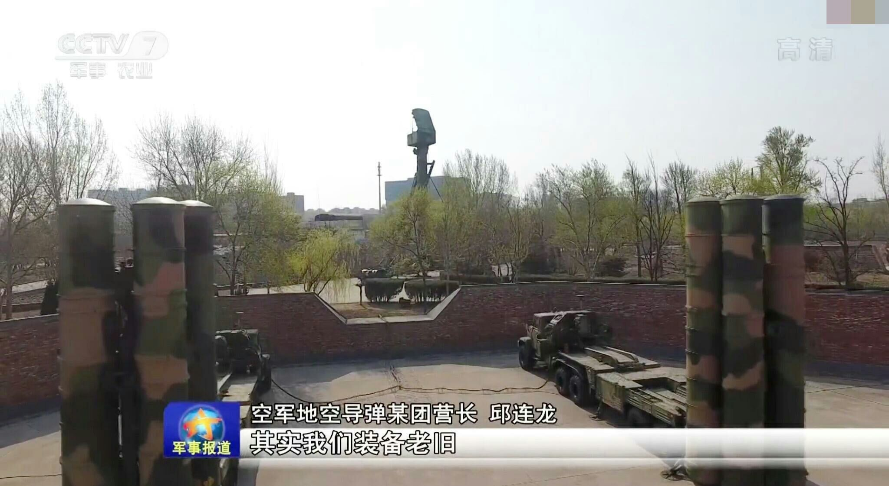

如何清除台湾的防空导弹对j11 h6等我军飞机的威胁？
山高县
历史给皇罗的代号叫拜占庭
有代差的情况下压制不难。现在S300PUM1在中央七台的八股报道中已经被称为老旧装备，潜台词就是性能不是太好，能打好已经可以上新闻了。。。。。。
然而台湾似乎并没有比S300PMU1更强的防空导弹。。。。。。。

不过最后还是得指出，压制陆基防空导弹是空军领域除了对抗隐身战机之外最难的任务，即使能压制住也会付出很大代价（即使有代差也要付出大量的架次）。因此，最好的办法还是航空兵压制，特种兵机降拔点。
赞同:101
创建时间:2018-01-07
评论:36
最后更新:2018-01-09